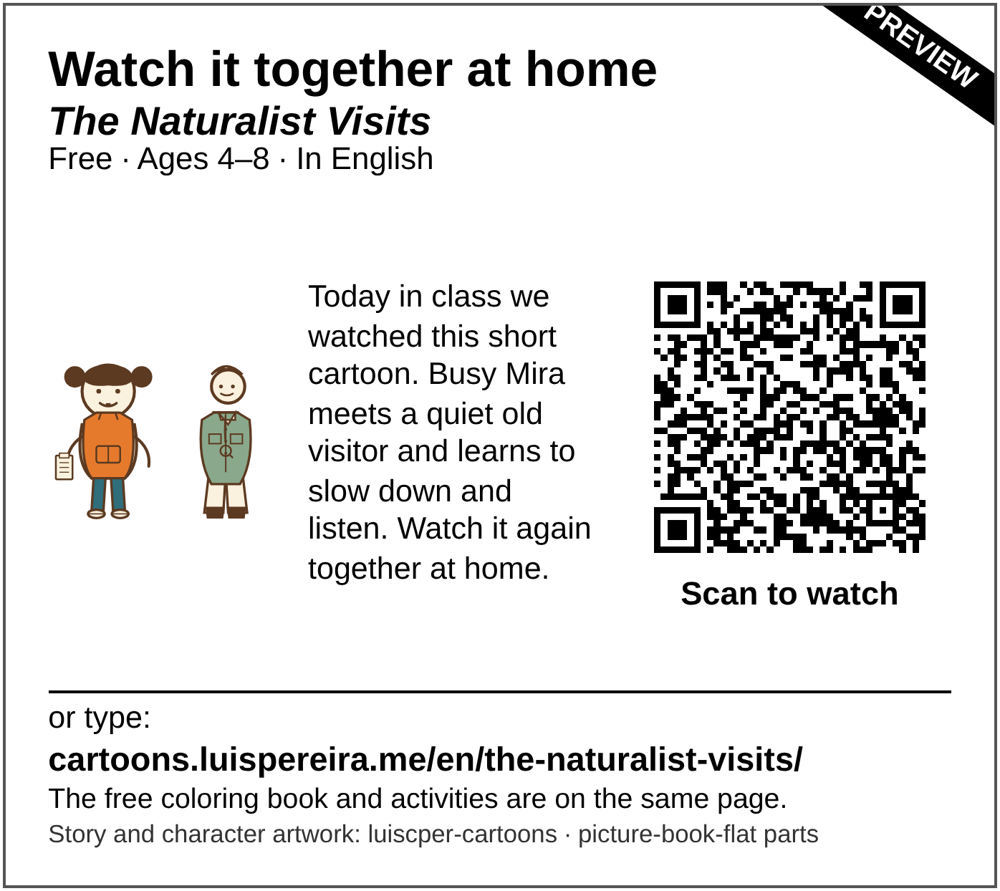
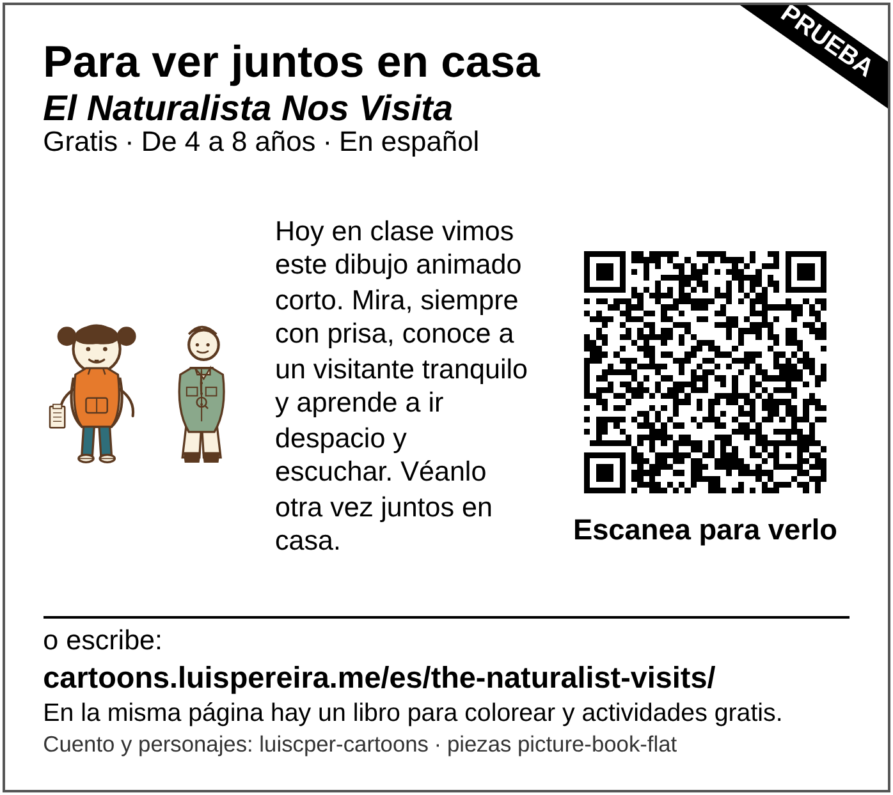
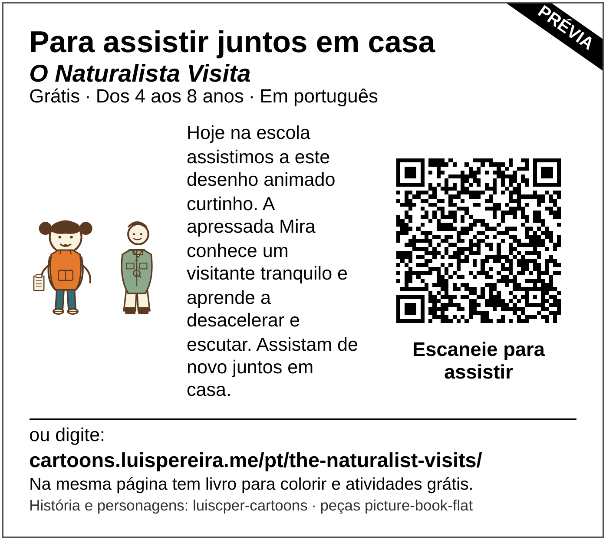

Para assistir juntos em casa: cartões para as famílias
Prévia: o site público ainda não está no ar, por isso estes cartões estão marcados e o código pode ainda não abrir o desenho animado. Aguarde a versão final.
Mostrou «O Naturalista Visita» em aula? Mande um cartão para casa, para as famílias acharem o desenho animado e assistirem juntas, no idioma que preferirem.
Lista para professores
- Mostre o desenho animado em aula: «O Naturalista Visita», cerca de 4 minutos.
- Imprima uma folha (preto e branco serve) e recorte os cartões, ou coloque a imagem do cartão no comunicado de sempre para as famílias. Mande para casa pelo canal habitual da escola.
- Convide as famílias a assistir em casa no idioma que preferirem. Cada cartão abre o desenho animado no seu próprio idioma.
🔎 Quer algo para fazer depois? Use o pacote de atividades grátis.
Os cartões






Privacidade
Os cartões não têm nomes. O código abre a página do episódio com uma única etiqueta fixa, utm_source=classroom-card, igual em todos os cartões. Não diz nada sobre nenhuma criança, turma, professor ou escola. Nada é coletado das famílias.
Créditos
História e personagens: luiscper-cartoons · peças picture-book-flat